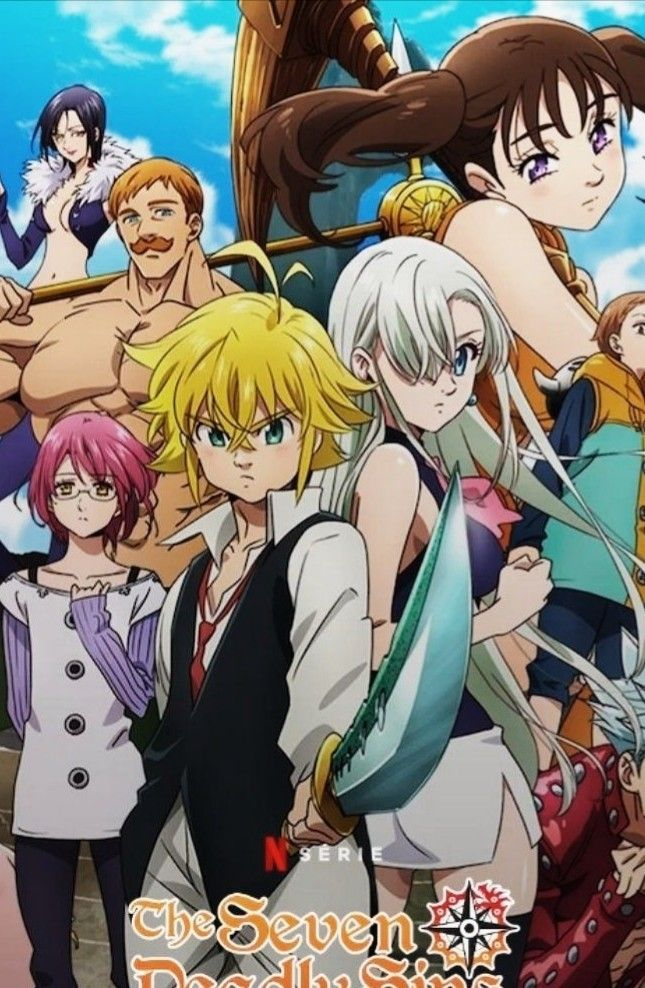

Sobre el anime
The Seven Deadly Sins, conocido en japonés como Nanatsu no Taizai, es un anime de fantasía y aventura que sigue la historia de un grupo de guerreros legendarios llamados “Los Siete Pecados Capitales”. Cada integrante representa un pecado, pero en realidad fueron acusados injustamente de traicionar al reino de Liones. La princesa Elizabeth emprende un viaje para encontrarlos y pedir su ayuda para salvar el reino de unos caballeros corruptos. Durante la historia aparecen batallas, magia, criaturas sobrenaturales y secretos del pasado de cada personaje. El protagonista principal es Meliodas, líder del grupo, quien esconde un gran poder y una historia muy importante relacionada con los demonios. El anime combina acción, comedia, amistad y romance, y se volvió muy popular por sus peleas épicas y personajes carismáticos.
creador del anime
Nakaba Suzuki es un mangaka japonés reconocido principalmente por crear The Seven Deadly Sins (Nanatsu no Taizai). Nació el 8 de febrero de 1977 en Japón y comenzó su carrera como dibujante y escritor de manga desde joven. Gracias al éxito de su obra, se convirtió en uno de los autores más populares del género de fantasía y aventura, destacando por sus historias llenas de acción, magia y personajes memorables.
